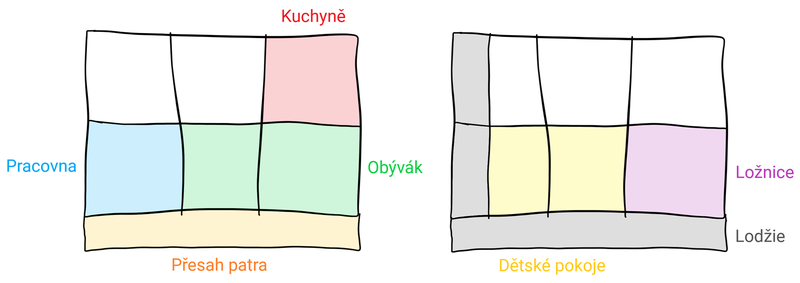
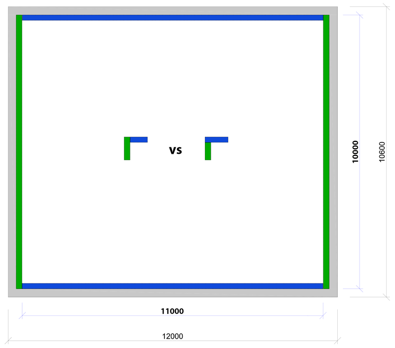

Už od začátku jsme měli jasno, že nechceme typový dům z katalogu. Dáváme přednost kvalitnímu individuálnímu projektu na míru, který vyhoví našim požadavkům a představám. Na architektonické studii domu jsme začali pracovat na konci března 2019. Vybrali jsme si Vize Ateliér z Brna - projekční a architektonický ateliér se specializací na komplexní řešení pasivních, nulových a plusových domů. Tvorba studie domu trvala celkem 4 měsíce a hlavními autory jsou Ing. arch. Petr Novák, Ph.D. a Ing. arch. Martin Krč. Návrh půdorysů probíhal celkem v 8 iteracích, než jsme dům doladili do finální podoby. Od prvního setkání po převzetí hotové studie proběhlo celkem 8 schůzek s architekty. Výsledkem celé práce je architektonická studie, obsahující fotorealistickou vizualizaci domu, průvodní zprávu, situaci širších vztahů, půdorysy, řez, pohledy ze všech světových stran, 3D model z různých stran a energetické hodnocení podle PHPP (Passive House Planning Package). Studii jsme dostali v tištěné i elektronické podobě.
V tomto článku chci primárně popsat proces, jak studie vznikala, jaké jsme řešili problémy a ohodnotit spolupráci s architekty. Hotový výsledek, jak bude dům vypadat, ukážu v dalším článku.
První návrh
Na první schůzce jsme architektům předložili zadání projektu, kde jsou popsány veškeré naše požadavky a představy, jak by měl dům vypadat. To, že dům nemůže být do L, jak jsme původně chtěli, mi docvaklo, ještě než jsme zkontaktovali architekty. SketchUp umožňuje simulovat sluneční svit a zastínění v různých ročních obdobích a různých časech. Zjistil jsem, že kdyby byl dům do L, stínil by v odpoledních hodinách jižní stranu, což by bylo nežádoucí. Velkou výhodou také bylo, že už od začátku jsme měli jasno, z jakého materiálu bude dům postaven. Zadání jsme si společně prošli a prodiskutovali různé možnosti. Dále jsme architektům předali podrobný situační výkres pozemku, geometrický plán a fotky pozemku z dronu a telefonu. Architekti navštívili náš pozemek, zaměřili si ho a zastavili se i na stavebním úřadě. Upozornili nás, že úřady by mohly mít problém s rovnou střechou, ačkoliv v územním plánu žádná podmínka stanovena není. Také budeme muset žádat o nové územní rozhodnutí, což se může táhnout až 1 rok, protože úřady nestíhají. O tom jsme vůbec nevěděli a trochu nás to vyděsilo, ale rozhodli jsme se pokračovat dál.
Na další schůzce po 3 týdnech jsme dostali první návrh dispozičního řešení. Ten nám moc do oka nepadl, ale pomohl nám ujasnit si naše představy a uvědomit si, že splnit všechny požadavky ze zadání nebude reálné. Zamysleli jsme se nad návrhem půdorysů a sepsali feedback pro architekty. Navrhli jsme dům zmenšit a změnit uspořádání místností. Popsal jsem architektům naši představu a přiložil náčrtek, znázorňující zóny domu:

Představovali bychom si celou jižní stranu domu (v přízemí i v patře) prosklenou francouzskými okny. Prosklení nemusí být po celé šíři. Můžou být např. 3 velká francouzská okna oddělená kusem zdi. Z tohoto důvodu nemůže být kuchyně v jižní části domu. Na jižní straně bychom chtěli přesah, nad kterým by byla lodžie v patře. Lodžie v patře by mohla být do tvaru L na jižní a západní straně, čímž by se vykompenzoval rozdíl podlahové plochy v přízemí a patře. Pracovna by mohla být umístěna v jihozápadní části (u příjezdové cesty), obývací pokoj v jihovýchodní části (do zahrady) a kuchyně v severovýchodní části. Terasa by mohla být orientována v jihovýchodním rohu, kde bude více soukromí a odpolední stín. Dům by mohl být obdélníkového tvaru.
Ladění půdorysů
O měsíc později jsme dostali druhý kompletně přepracovaný návrh půdorysů, který se nám líbil už mnohem víc. Tento návrh vycházel z výše uvedené představy a byl značně inspirován dispozičním řešením pasivního domu v Hovorčovicích. Zóny domu byly navrženy přesně podle našeho schématu, pouze lodžie v patře nebyla ve tvaru L. Místo toho vznikly dvě samostatné lodžie - na jižní straně a v severo-západním rohu. U těchto půdorysů jsme už zůstali a dále jen ladili nejrůznější detaily a celkovou podobu domu. Architekti pro nás připravili i zjednodušený 3D model, abychom si mohli dům lépe představit v prostoru. Na modelování používají stejný software jako já - SketchUp. Vzali jsme si nějaký čas na rozmyšlenou a sepsali další feedback, ve kterém jsme zakomponovali převážně požadavky z původního zadání, které nebyly zapracovány. Navrhli jsme upravit některé rozměry místností, umístění dveří, zesílení zdi mezi ložnicí a pokojem kvůli zvukové izolaci, vstup do spíže maskovaný kuchyňskou stěnou, v obýváku velkou knihovnu přes celou stěnu, klavír, WC v patře přetvořit v malou koupelnu a další úpravy dle zadání. Co se týče exteriéru, architekti navrhli nechat parkovací stání před domem otevřené do ulice. Ačkoliv to vypadá dobře, navrhli jsme prostor uzavřít kvůli většímu pocitu bezpečí. Dále jsme navrhli zvětšit terasy, přidat pergolu na východní terasu a upravit rám lodžie na jižní straně, aby byl silnější, bez odsazení od krajů a v jedné rovině se střechou a západní/východní stěnou domu. Na následujícím obrázku je první návrh našeho domu (celkově druhá iterace) v podobě 3D modelu - pohled z jiho-západní strany.
Ve třetím návrhu byly všechny naše připomínky zapracovány a půdorysy se o dost přiblížily finální podobě. Architekti umístili na severní stranu domu, kde se nachází dvouramenné schodiště, velké kulaté okno. Rám jižní lodžie byl srovnán s fasádou domu a jako výplň mezi francouzskými okny byly navrženy fasádní desky Cetris nebo Cembrit. Na schůzce jsme řešili umístění stolu v pracovně tak, aby nebyl zády ke dveřím. Nemám totiž rád, když mám za sebou otevřený prostor. I v práci mám za svým pracovním stolem zeď. Dále jsem navrhl přemístit klavír z jiho-západního rohu obýváku na druhou stranu. Díky tomu vznikne velká 5 metrová knihovna přes celou stěnu obýváku. V půdorysech jsem si všiml, že velikost a umístění nájezdu na pozemek neodpovídá realitě. Byl jsem si to na pozemku přeměřit. Dobře mi posloužila fotka pozemku z dronu, do které jsem názorně zakreslil všechny rozměry, vzdálenosti a zaslal architektům.
Architektonický styl
K poslednímu návrhu jsme bohužel nestihli dát dohromady feedback, takže čtvrtý návrh půdorysů obsahoval jen několik změn, které jsme konzultovali osobně na poslední schůzce. Architekti ovšem poměrně zásadně změnili vnější podobu domu do neofunkcionalistického stylu, který se nám líbí. Nechali se inspirovat rodinným domem významného českého architekta Bohuslava Fuchse. Použili zaoblené rohy u severo-západní lodžie a přístřešku parkovacího stání, který tak připomíná známou čekárnu pouliční dráhy na Obilním trhu v Brně. Použili také typické trubkové zábradlí, fasádní desky mezi okny nahradili světle modrou barvou a sklad s přístřeškem opatřili plechovou krytinou.
Nechali jsme si pár týdnů na rozmyšlenou a sepsali dlouhý seznam bezmála 50 připomínek a nápadů, který jsme poslali architektům a následně konzultovali na osobní schůzce. Tato schůzka byla zároveň poslední. V dalších fázích už jsme komunikovali jen přes e-mail a po telefonu. Chtěli jsme mít studii hotovou na začátku letních prázdnin, protože jsem měl letět pracovně do zahraničí a léto jsme měli celkově dost nabité. Feedback, který jsme dali dohromady, byl hodně detailní. Sepsali jsme úplně všechno, co nás napadlo. Chtěli jsme mít studii dobře vyladěnou, abychom později už nemuseli dělat mnoho změn.
Modulace zdiva a další úpravy
Navrhl jsem upravit velikost domu tak, aby obvodové zdivo bylo “v modulu”, jak o tom píše pan Partika na svém blogu. Toto se většinou řeší až ve fázi projektování, ale chtěl jsem to mít už ve studii, aby se později nemusely měnit rozměry místností a umístění dveří/oken. Ideální je modulovat zdivo tak, aby se vápenopískové bloky poskládaly na plnou délku a nebylo potřeba tvárnice řezat. Rozměry domu v modulu jsem spočítal následovně:
Tloušťka zdiva: 200 mm
Izolace: 300 mm
Délka modulu: 250 mm
Výpočet velikosti domu v modulu:
A = X%250 + 300 + 300
B = Y%250 + 200 + 200 + 300 + 300
(X%250 je libovolné číslo X dělitelné 250)
Aktuální velikost domu: 11800 x 10500 mm
Aktuální velikost domu bez izolace: 11200 x 9900 mm
Velikost domu v modulu: 12000 x 10600 mm
Jsem perfekcionista a detailista. Všechno potřebuju mít konzistentní, vycentrované, symetrické a zarovnané v lajně. V tomto smyslu jsem navrhl několik dalších úprav. Např. vertikální zarovnání dveří západní lodžie s vchodovými dveřmi, vertikální zarovnání kuchyňského okna s koupelnovým v patře, bar v kuchyni v jedné linii se zdí chodby, posunutí příčky mezi ložnicí a dětským pokojem tak, aby dětské pokoje byly zrcadlově stejné a příčka mezi dětskými pokoji byla přesně v polovině zdi mezi okny atd. Abych mohl v půdorysech snadno poměřovat velikosti místností, dveří, oken a dalších prvků, využil jsem Photoshop, do kterého jsem importoval PDF a upravil velikost tak, aby 1 px na obrazovce odpovídal 1 cm ve skutečnosti. Abychom si dokázali lépe představit různé rozměry a posoudit, zda bude např. zádveří 6 m2 dostatečně prostorné, změřili jsme si doma a v bytech našich známých místnosti, chodby, schodiště, dveře atd. Díky tomu jsme si pak dokázali lépe představit, jak co bude velké, např. dolní koupelna bude podobně velká jako koupelna mojich rodičů.
Dětské pokoje byly ve studii původně vymyšleny tak, že se nechá jeden velký pokoj, který se může později rozdělit na dva příčkou. Hodně jsme o tomto přemýšleli a nakonec se rozhodli pokoje rozdělit zdí a propojit velkými dvoukřídlými posuvnými dveřmi uprostřed místnosti. Nechceme od sebe malé děti oddělovat, ale oceníme dvě samostatné místnosti, když k nám přijede naše početná rodina a bude chtít přenocovat. Takto můžeme mít o jeden hostinský pokoj navíc. Nebudeme muset dělat další dodatečné stavební úpravy a VPC zeď mezi pokoji bude lepší než sádroš.
Dále jsme navrhli zvětšit výšku stropu v prvním podlaží na 2,8 m. Velký obývák tak bude působit vzdušněji a příjemněji. V chodbách a koupelnách se plánuje podhled s výškou 2,6 m, kudy bude rozvedena vzduchotechnika. Malé WC v patře jsme navrhli umístit podél schodiště a vytvořit tak menší koupelnu pro děti s WC a standardním umyvadlem. Některé posuvné dveře jsme nahradili otevíravými. HS portál na východní straně domu jsme posunuli směrem ke kuchyni, kde bude jídelní stůl a vstup na zastřešenou terasu. Tím vznikla větší zeď v jiho-východním rohu, kde může stát klavír. Také se lépe využije jídelní prostor. Dále se touto úpravou vyřešil estetický problém, kdy střední sloupek pergoly rušil výhled z okna. Nyní je střední sloupek v lajně s okrajem okna. Americké lednice mají standardní šířku 91,2 cm. Navrhli jsme prodloužit zeď za lednicí na 100 cm, aby šla lednice zabudovat do kuchyňské stěny a vedle mohl být vchod do spíže. V dětských pokojích jsme navrhli postele 90 cm a vestavěnou skříň u severní stěny, aby maskovala komín. Navrhli jsme ještě další drobné úpravy a vylepšení, ale nebudu v článku vypisovat úplně vše.
Co se týče exteriéru, architekti nám doporučili použít externí screenové rolety namísto žaluzií. Tento nápad se nám zalíbil, rolety vypadají lépe, a tak jsme se rozhodli je použít. Jediná nevýhoda screenů je, že v noci je přes ně vidět, pokud se v domě svítí. Bude tedy potřeba mít všude závěsy. Dále mě napadlo vytvořit v přístřešku před vchodem do domu kulatý otvor - jako designový prvek a zároveň průzor z lodžie na branku před domem. Kulaté tvary se k funkcionalismu hodí a navíc se tím prosvětlí vstupní prostor. Chtěl bych použít kulaté tvary i v interiéru - kulatý stůl, umyvadla, svítidla atd.
Rozmýšleli jsme i nad architektonickým stylem. Místo 3 samostatných francouzských oken v přízemí na jižní straně jsme navrhli vytvořit velkou jednolitou prosklenou plochu přes celou stěnu. Bude to lépe vypadat a krásně se tím propojí obývák se zahradou. Preferujeme jednoduchý, minimalistický a nadčasový styl. Zrušili jsme barevné výplně a navrhli použít neutrální barvy - bílou fasádu, antracitově šedé rámy oken, dveře, zábradlí, sloupky a pergolu. Aby to ale nebylo příliš fádní a nudné, napadlo nás použít výraznou modrou barvu na vchodové dveře a screenové rolety. Proč modrou? Architektonický styl domu vychází z funkcionalismu s nautickými motivy a k tomu nám ta modrá sedí.
Architekti rychle zapracovali všechny naše připomínky a zaslali nám pátou verzi půdorysů. Následoval další feedback. Nechali jsme ještě doladit rozměry či umístění různých prvků a navrhli několik drobných úprav. Sklad na severní straně měl po změně velikosti domu různé odstupy oproti stěnám domu. Navrhli jsme z obou stran zachovat odstup 1 m. Jelikož se změnila výška stropu a rozměry domu tak, aby byl “v modulu”, bylo potřeba půdorysy kompletně překreslit, změnit rozměry místností a u schodiště do patra přidat dva schody. Nové rozměry domu však architektům vyšly na 1197,5 cm x 1062,5 cm v modulu 125 mm. Došlo k menšímu nedorozumění, kdy architekti usoudili, že mnou navržený rozměr “v modulu” není. Fór ale spočívá v tom, že tvárnice lze poskládat dvěma způsoby, jak naznačuje následující schéma, které jsem pro názornost vytvořil. Pokud se to poskládá daným způsobem, vychází to v modulu 125 mm i 250 mm. Požádal jsem architekty, aby půdorysy znovu překreslili na požadované rozměry. Nechtěl jsem mít rozměry domu a místností na půl-centimetry, protože se potom všechno hůře vyměřuje. Chtěl jsem zachovat rozměry místností “v gridu” po 10 centimetrech, jako to bylo v předchozích návrzích. Díky tomu se pak bude vše lépe počítat při stavebních pracích, ale i při výrobě nábytku, vestavěných skříní, podlahy, dlažby atd. Zkrátka s rozměrem kuchyňské linky 310 cm se pracuje mnohem lépe než s 312,5 cm.

Dále jsme si všimli, že před dveřmi západní lodžie je schod. Chtěli jsme mít dům bezbariérový. Architekti nám následně vysvětlili, že schod tam vzniknul kvůli tomu, že lodžie, pod kterou se nachází zádveří, je nutné zaizolovat. Schod by se dal eliminovat použitím kvalitnější tepelné izolace (např. vakuová izolace), jen by to bylo dražší a náročnější na realizaci. Rozhodli jsme se jít cestou jednoduchého a spolehlivého řešení a schod jsme zachovali tak, jak architekti navrhli. Bude to jediný bariérový prvek v našem domě (nepočítám-li schody do patra), ale v tomto případně to nijak nevadí. Západní lodžie nejspíš nebude příliš využívaná, jedná se hlavně o designový prvek. Další věc, kterou jsme řešili byly dva přidané podpěrné sloupy u velké jižní lodžie. Architekti nám po konzultaci s projektantem potvrdili, že to půjde technicky vyřešit i bez sloupů (pomocí isokorbů), takže jsme je nechali odstranit.
Finalizace studie a odhad ceny
Studie už se finalizuje. Obdrželi jsme v pořadí již šestou verzi a po vyjasnění problému modulace zdiva ještě sedmou verzi půdorysů s rozměry domu 12 m x 10,6 m. Poslední věc, která mě trápila, byla velikost a provedení brány. Původní návrh počítal s bránou o šířce 4,2 m s integrovanou brankou 1 m. My bychom ale preferovali samonosnou bránu oproti pojezdové. Uvědomil jsem si, že samonosná brána se tam nevejde, protože vyžaduje prostor velikosti průjezdu + 1/3 navíc. Navrhl jsem použít dvoudílnou samonosnou teleskopickou bránu. Nebyl jsem si jistý, jak náročné by bylo vyrobit teleskopickou samonosnou bránu s integrovanou brankou bez prahu, a proto jsme nakonec rozhodli nechat branku napevno. Toto řešení by mělo být jednodušší, více spolehlivé a snadno půjde zaintegrovat elektrozámek s RFID. Měl jsem také obavu, že parkování a vytáčení se s autem do 90° bude dost náročné při velikosti brány 3,2 m. Zkusil jsem si dráhu vozidla nasimulovat ve SketchUp. Navrhl jsem bránu s nájezdem rozšířit ještě o 0,5 m tak, aby měla celkem 3,7 m. Na obrázku je rozšíření brány znázorněno zelenou barvou.
Architekti doladili v půdorysech poslední detaily a přidali ještě okrasný strom. Odsouhlasili jsme si finální verzi a architekti dopracovali další části studie. Na začátku srpna jsme převzali hotovou architektonickou studii našeho domu a tím uzavřeli první část naší spolupráce s Vize Ateliér.
Kolik to celé bude stát? Naši architekti tvrdí, že aktuální průměrná cena standardního domu je 7500 Kč/m3 obestavěného prostoru (včetně DPH), ale náš dům odhadují na 8500 - 9000 Kč/m3 kvůli některým nadstandardním prvkům. Cena se vztahuje pouze na samotný dům při stavbě na klíč (nepočítá se oplocení, terasy, pergola, sklad atd.). I tak to překračuje náš stanovený rozpočet. Doufáme, že se nám podaří výdaje optimalizovat, budeme-li stavět subdodavatelsky.
Hodnocení spolupráce
Spolupráci s Vize Ateliér hodnotíme pozitivně. Celkově jsme spokojeni a firmu určitě můžeme doporučit všem, kdo chtějí stavět pasivní rodinný dům. Architekti zapracovali všechny naše požadavky a přišli s několika dobrými nápady - např. screenové rolety, velké kulaté okno u schodiště, sklad a přístřešek na hranici pozemku, spíž pod schody, malá šatna u ložnice atd. Toto je naše hodnocení dle jednotlivých kategorií:
Půdorysy: ★★★★★
Architektura: ★★★★☆
Komunikace: ★★★☆☆
Výstupy: ★★★★★
Návrh půdorysů je podle mého názoru velmi zdařilý a dobře promyšlený. Architekti i my jsme jim věnovali nemalé množství času. Půdorysy jsou poměrně detailní, zahrnují umístení nábytku, zařízení a nechybí ani rozloha a světlá výška místností. V rámci inspirace jsme viděli mnoho různých půdorysů a občas se děsíme, co lidi vymyslí. Myslíme si, že náš dům je dobře a prakticky uspořádán a doufáme, že se v něm bude skvěle bydlet. Čas ukáže, ale máme z toho zatím dobrý pocit. Co se týče architektonického návrhu, jsme také vcelku spokojeni. Dům svým tvarem dobře zapadá do okolní zástavby. Líbí se nám, že to není jen obyčejná kostka, je svým způsobem originální a má jednotící myšlenku - neofunkcionalistický styl s nautickými motivy, který se k Brnu hodí. Zpětně mě trochu mrzí, že jsme nevyzkoušeli více variant architektonické podoby domu. Po dokončení studie mi to vrtalo hlavou. Mohli jsme si s tím zkusit ještě více pohrát. Co se týče komunikace, měli jsme pocit, že jsme společně o věcech málo diskutovali a architekti se nás málo vyptávali co/jak by se nám líbilo. Nikdy se nás nezeptali, co je naše povolání, zda pracujeme z domova, jaké jsou naše koníčky, jaký máme denní režim, jak často přijímáme návštěvy, nebo jak máme velkou rodinu. Na schůzkách jsme většinou řešili jen naše připomínky k aktuální verzi studie. Dále jsme si museli zvyknout, že architekti příliš nepoužívají e-mail a preferují spíše telefonickou komunikaci, což zase moc nevyhovuje nám. Výstupy hodnotíme velmi dobře. Studie obsahuje vše potřebné, vizualizace vypadá moc pěkně, nechybí podrobná průvodní zpráva, řezy znázorňují svit letního/zimního slunce, v pohledech nechybí výška různých částí domu a energetické hodnocení pasivního domu (PHPP), kde je mimo jiné v grafech znázorněna potřeba tepla na vytápění. Také jsme ocenili, že architekti nám vždy zaslali aktuální verzi půdorysů a 3D modelu v PDF. Finální studii jsme dostali vytištěnou a svázanou ve formátu A3. Tímto architektům děkujeme, že to s námi vydrželi, protože jsme toho navymýšleli docela dost. Těšíme se na další spolupráci.